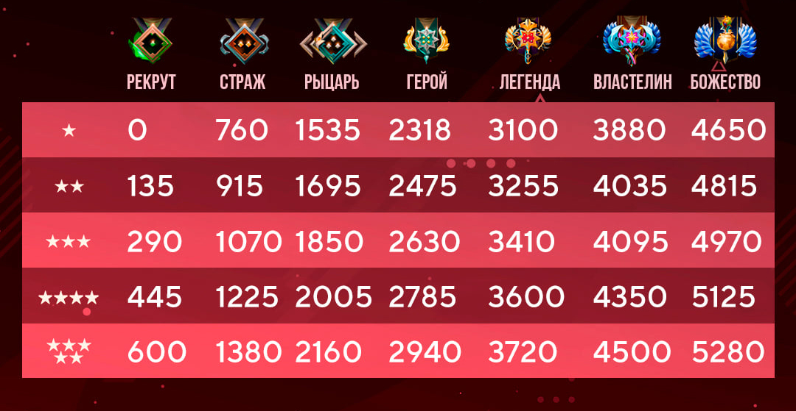

Dota — серія стратегічних відеоігор. Серія почалася в 2003 році з випуску Defense of the Ancients, розробленого фанатами багатокористувацького мода онлайн-бойової арени для відеогри Warcraft III: Reign of Chaos та її розширення The Frozen Throne.
Рейтинг в грі ти отримуєш відповідно до твоєї гри та можливостей в грі. Зазвичай,шоб підняти свій ранг потрібно заробити в середньому 150 ммр.
Найважливіші пункти в грі-це ммр,порядність та чесність
| ММР | Рейтинг в грі | Розподіляється від 0 до 5000+ |
| Порядність і чесність | Оцінка твої гри та спілкування | Йдуть від 0 до 10.000 |
Топ-10 найпопулярніших персонажів гри: